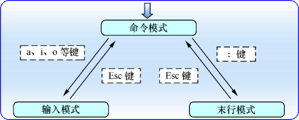

Linux
在 Linux 系统中一切都是文件，而配置一个服务就是在修改其配置文件的参数。
Linux翻页方法
- Linux翻屏（翻页）：
- shift+PgUp/PgDn
- 输入的命令后面加管道命令：date --help |more / date --help |less
- tmux翻屏（翻页）：ctrl+b PgUp/PgDn
基本指令
命令名称 [命令参数] [命令对象]
命令参数可以使用长格式，也可以用短格式
执行查看帮助命令
man
常用系统工作命令
echo
date
reboot
poweroff
wqet
ps
top
pidof
kill
killall
系统状态检测命令
ifconfig
uname
uptime
free
who
last
history
sosreport
工作目录切换命令
pwd
cd
ls
文本文件编辑命令
cat
more
head
tail
tr
wc
stat
cut
diff
文件目录管理命令
touch
mkdir
cp
mv
rm
dd
file
打包压缩与搜索命令
tar
grep
find
目录
/usr 文件系统
usr是 Unix System Resource 的缩写，里面一般放软件程序。 /home目录下存的才是用户自己的东西。
/usr/bin
几乎所有用户命令.有些命令在/bin 或/usr/local/bin 中。
/var 文件系统
/var 包括系统一般运行时要改变的数据.每个系统是特定的，即不通过网络与其他计算机共享。
/opt 用户级的程序目录
这里主要存放那些可选的程序。你想尝试最新的firefox测试版吗?那就装到/opt目录下吧，这样，当你尝试完，想删掉firefox的时候，你就可 以直接删除它，而不影响系统其他任何设置。安装到/opt目录下的程序，它所有的数据、库文件等等都是放在同个目录下面。
tmux
终端复用命令行工具
- 会话（Session）操作
- tmux ls 列出所有会话
- tmux new -s foo 新建名为foo的会话
- tmux a -t foo 进入名为foo的会话
- tmux detach 退出当前会话
- tmux kill-session -t foo 删除名为foo的会话
- tmux kill-server 删除所有会话
- Ctrl+b $ 重命名当前会话
- Ctrl+b s 选择会话列表
- 窗口（Window）操作
- Ctrl+b c 新建窗口
- Ctrl+b w 窗口列表选择
- Ctrl+b & 关闭当前窗口
- Ctrl+b , 重命名窗口
- 窗格（Pane）操作
- Ctrl+b % 左右分屏
- Ctrl+b " 上下分屏
- Ctrl+b ↑↓←→ 上下左右选择窗格
- Ctrl+b x 关闭当前窗格
- Ctrl+b Space 切换窗格布局
- Ctrl+b { 当前窗格前移
- Ctrl+b } 当前窗格后移
- Ctrl+b z 最大化当前窗格，再次执行恢复原来大小
- Ctrl+b q 显示窗格序号，序号出现期间按下对应的数字可跳转至对应的窗格
Vim
Vim 编辑器中设置了三种模式：
命令模式：控制光标移动，可对文本进行复制、粘贴、删除和查找等工作。
输入模式：正常的文本录入。
末行模式：保存或退出文档，以及设置编辑环境。
